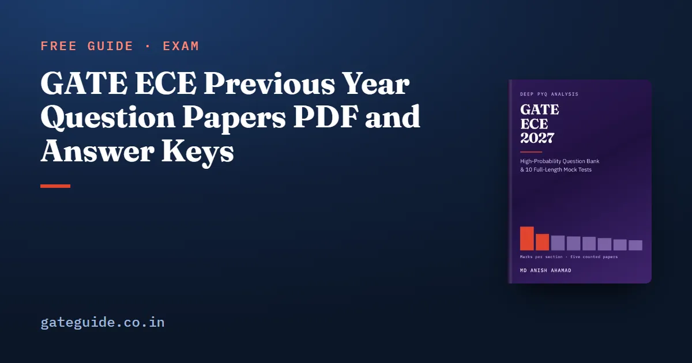

GATE ECE Previous Year Question Papers PDF and Answer Keys

Every GATE EC question paper worth having is published by a GATE organising institute, free, with no sign-up. The problem is that the institute that set a paper usually takes its own website down within a few years, so the paper you want is almost never on the site you would think to look at. This guide gives the hosts that actually carry the archive, the exact paths for the papers and keys, the format traps in the older files, and the method that turns a downloaded PDF into something useful.
In this guide
Key takeaways
- The official archive is mirrored on three organising-institute hosts:
gate2027.iitm.ac.in/download,gate2026.iitg.ac.in/download.htmlandgate2025.iitr.ac.in/download.html. They carry the same files. - The 2019 EC answer key does exist. It is printed at the back of the 2019 question paper itself, on pages 29 to 31. No host publishes it as a separate file, which is why people conclude there is none.
- The 2020 EC paper is a print-to-PDF of an online question viewer, with its question bodies stored as images. The 2019 paper has no text layer at all. In both, text search will not find a question — scroll to the number.
- The 2020 answer key has no standalone URL either. Pages 19 to 20 of the 2020 question paper are the full final key table.
- No official host publishes a 2010 EC paper or key. The archives begin at 2019.
- Paper URLs move between cycles. Confirm the current download page against the notification on the official portal.
Where the archive actually lives
Where a year's own organising institute still publishes its paper, use that host. For most years it does not, because the sites are gone. Checked in September 2026: IIT Kanpur's and IIT Delhi's GATE hosts no longer resolve in DNS at all, IIT Kharagpur's resolves but refuses connections, IIT Bombay's is a one-page redirect notice with no papers on it, and IIT Madras' old GATE host now serves the GATE 2027 site and holds no 2019 content.
What survives is the archive that the current organising institute maintains, and it is served identically from three addresses:
https://gate2027.iitm.ac.in/download— IIT Madrashttps://gate2026.iitg.ac.in/download.html— IIT Guwahatihttps://gate2025.iitr.ac.in/download.html— IIT Roorkee
If a link below has moved by the time you read this, try the same path on one of the other two hosts before concluding the document is gone. Download pages are reorganised every cycle, so treat the current notification at gate2027.iitm.ac.in as the authority and see the GATE 2027 exam schedule for where the cycle stands.
The papers and keys, with paths
These are the five GATE EC papers this site's numbers are counted from — 2010, 2019, 2020, 2025 and 2026 — with the byte counts recorded at download so that you can confirm you have the same file.
| Year | Institute | Question paper | Answer key |
|---|---|---|---|
| 2026 | IIT Guwahati | gate2026.iitg.ac.in/doc/download/2026/QPs/EC.pdf |
gate2026.iitg.ac.in/doc/download/2026/Keys/EC_Keys.pdf |
| 2025 | IIT Roorkee | gate2025.iitr.ac.in/doc/2025/2025_QP/EC.pdf |
gate2025.iitr.ac.in/doc/2025/2025_Key/EC_Keys.pdf |
| 2020 | IIT Delhi | gate2026.iitg.ac.in/doc/download/2020/ec_2020.pdf |
pages 19–20 of the question paper |
| 2019 | IIT Madras | gate2026.iitg.ac.in/doc/download/2019/ec_2019.pdf |
pages 29–31 of the question paper |
| 2010 | IIT Guwahati | not published by any official host | none published |
The 2026 paper is 14,137,852 bytes and its key 518,069; the 2025 paper 1,326,393 and its key 293,040; the 2020 paper 2,438,546; the 2019 paper 3,231,916.
The archive also carries the years between 2020 and 2025. They are real official files and worth downloading for practice. They are not used as evidence for any number on this site, and you will not find one cited here, because a figure is only as good as the count behind it and those papers have not been counted question by question.
The 2019 answer key, which is not missing
This is the most useful single thing in this guide. Search for a GATE 2019 EC answer key and you will find nothing on any official host, and the natural inference is that IIT Madras never published one. That inference is wrong.
Pages 29 to 31 of the official 2019 EC question paper are the full key table — question number, question type, section, key and marks, for all ten General Aptitude questions and all fifty-five EC questions. The key is bound into the back of the paper you have already downloaded.
This matters more than a filing curiosity. GATE 2027 is set by IIT Madras, and 2019 is the one paper in the counted set that IIT Madras also set. A candidate who treats 2019 as unverifiable is discarding the only direct evidence available about how the 2027 institute writes an EC paper. With the key at the back, 2019 stands exactly where 2020, 2025 and 2026 stand.
The 2020 key has the same shape of problem with a different answer. IIT Delhi never published a standalone EC key PDF for 2020 and no current official host carries one, but pages 19 to 20 of the official 2020 question paper are the full final key table, under the heading "Answer Key - EC" and the 2020 copyright footer.
Format warnings, so you are not surprised
The 2020 paper is not a typeset document. It is IIT Delhi's print-to-PDF of its own online question viewer, with the site navigation baked into the page margins and the question bodies stored as images. It is complete — all 65 questions — and it is what the official archive publishes. It just does not look like the later papers.
The 2019 paper has no text layer at all. Page 1 has to be rendered as an image to be read.
In both files, text search will not find a question. If you are looking for the sampling question, you cannot search for "Nyquist"; scroll to the question number. Plan for that before you sit down with a timer.
There is no official 2010 paper. The archives begin at 2019: the 2018 paths on both the IIT Guwahati and IIT Roorkee archives return 404, and the older institute hosts do not resolve. Any 2010 EC paper in circulation is a reproduction. It is usable for counting question numbers, marks and topics, and it is not an authority on answers, because no official 2010 key exists either.
How to use a paper once you have it
Attempting a paper as a timed test is worth doing twice. Reading one as a data source is worth doing once, and it changes how you read every weightage table afterwards.
The method is this. Take one paper and its key. Go through all 65 questions and assign each one to a section of the 2027 syllabus — not the syllabus of the paper's own year — and to a topic within that section. Add the marks. The column must close at 100, with General Aptitude at exactly 15. That closure is the check: a column that does not close is wrong, and a column that does close can still be wrong only by trading marks between two sections, which is visible to anyone who reads the two questions.
It takes about an hour on one section of one paper, and it is worth doing before you trust any published breakdown. Here is why. Four sites publish four totals for the 2020 EC paper — 105, 90, 90 and 84. That looks like four measurements disagreeing. It is one table copied four times: the shared core totals 90 against a technical budget of 85, with Control Systems double-counted at 12 against a counted 6, and General Aptitude dropped in two of the four. Elsewhere, one site's 2026 column is its own 2025 column reprinted in all nine sections. Copying converts one error into four sources, and four sources look like corroboration.
That is the whole argument for counting rather than compiling, and the counted result is set out in the GATE ECE subject-wise weightage guide. Two further uses of a counted paper are worth knowing: it tells you which syllabus lines have actually been examined, which is how you separate a genuinely new 2027 topic from a newly named one in the 2027 syllabus changes guide; and it tells you the format mix of a section, which is what your practice should match.
What the papers cannot tell you
Five papers counted properly beat fifteen skimmed, but five is still five. A small counted base gives a centre and a width, not a long-run rate, and any single paper gets a fifth of the vote. Marks are also not difficulty: nothing published tells you how hard a question was or what fraction of candidates got it right.
And one paper cannot establish an institute's house style. 2019 is the only IIT Madras paper in the set, and it is unusual — every technical section between nine and fourteen marks, with no Thevenin, no Norton, no maximum power transfer and no resonance anywhere in it. That is a signal about the 2027 setter, not a law, and it is used as a signal in the Networks, Signals and Systems topic guide and in the GATE ECE 2027 preparation strategy.
The GATE ECE 2027 book carries the finished count of all five papers question by question, the 78 concepts that recur ranked with the reason for each rank, and 925 questions written for the book with full worked solutions.
Frequently asked questions
Where can I download GATE ECE previous year question papers officially?
From the GATE organising institute hosts. The same archive is served from gate2027.iitm.ac.in, gate2026.iitg.ac.in and gate2025.iitr.ac.in, and all three carry the same files. If a path has moved, try the identical path on one of the other two before concluding the document is gone. Links move between cycles, so check the current notification.
Is there an answer key for the GATE 2019 EC paper?
Yes, and this is the single most common misconception about it. No official host publishes a separate 2019 key file, so people conclude one does not exist. It does. Pages 29 to 31 of the official 2019 EC question paper carry the full key table with question number, type, section, key and marks for all 65 questions.
Why can I not search for text in the GATE 2019 and 2020 EC papers?
Because neither PDF has a usable text layer. The 2019 paper has no text layer at all, and the 2020 paper is a print-to-PDF of an online question viewer whose question bodies are stored as images, with the site navigation baked into the margins. Both are complete and official. Scroll to the question number instead of searching.
How many years of GATE EC papers should I actually solve?
Fewer, read more carefully, beats more skimmed. Counting one paper question by question against its official key, assigning each question to a 2027 syllabus section and checking that the marks close at 100 with General Aptitude at exactly 15, teaches more about the paper than attempting three papers as timed tests.
Is the GATE 2010 EC paper available on an official site?
No. The organising institute archives begin at 2019, and no current official host publishes 2010. Any 2010 EC paper you find online is a reproduction rather than an institute PDF, and it should be treated as usable for counting question numbers, marks and topics but not as an authority on answers, since no official 2010 key exists either.
Sources
- GATE 2027 official website (IIT Madras)
- GATE official paper archive (IIT Madras)
- GATE official paper archive (IIT Guwahati)
- GATE official paper archive (IIT Roorkee)
Dates, fees and the syllabus are set by the GATE 2027 organising institute and can change. Always confirm at gate2027.iitm.ac.in.